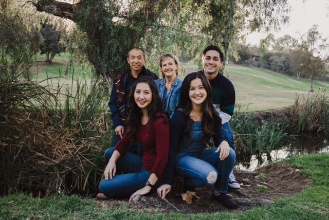

My name is Rachel Chang.
I am majoring in Computer Science.
I am from Southern California. I love running, coding, eating
food and taking naps. I served a mission in Taipei, Taiwan. My father is Chinese and my mom is American.
I love coding because I think it is amazing that I could learn a new language and then suddenly what I write comes to life. It gives new meaning to the pen is mightier than the sword. Except in my case the pen is a keyboard.
If there were one thing I could change about the world, it'd be that everyone knew and applied the gospel in their lives. The gospel gives so much happiness and meaning to life when applied to our lives.
It is the most beautiful thing to be a witness of the change that occurs when the gospel is applied to others lives.
I think it would solve all the world's problems because we would all be striving to be like Christ. And when all people are striving to be like Christ all the major problems in the world would be solved.
| Course # | Course Description | Section # | Class Time | Class Location | Instructor |
|---|---|---|---|---|---|
| CS213 | Web Engineering | 2 | TR-11:30AM-12:30PM | STC 293 | Brother Ercanbrack |
| HUM110-23 | Foundations of Humanities | 3 | -0:00-0:00 AM | Online | Sister Hanosek |
| FDREL225-41 | Foundations of the Restoration | 5 | -0:00-0:00AM | Online | Brother Searle |
| ENG301-24 | Advanced Writing and Research | 2 | MWF-11:30AM-12:30PM | MC 174B | Brother Slagle |